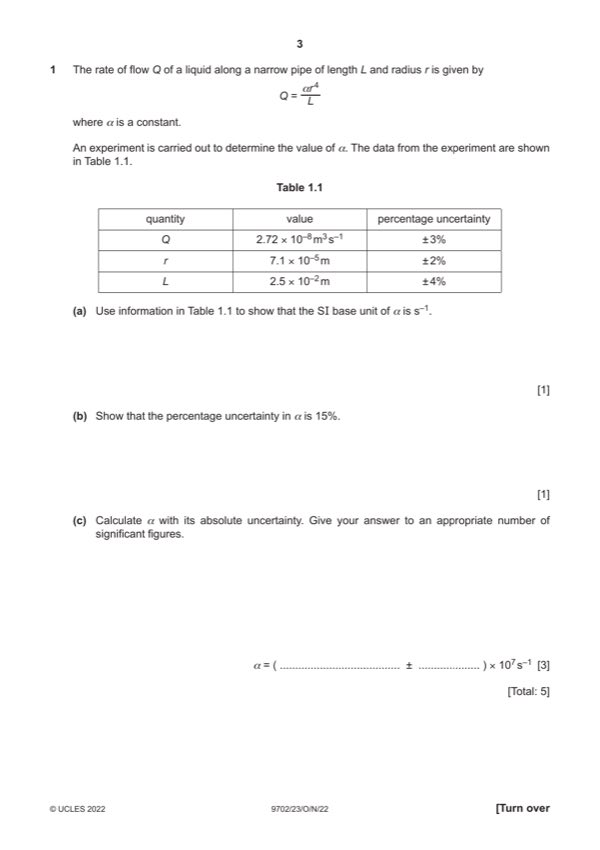
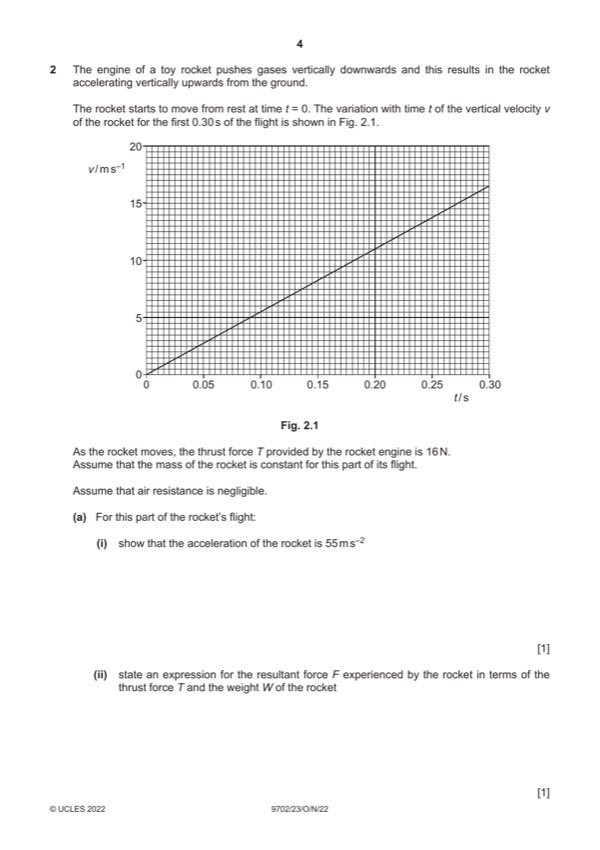
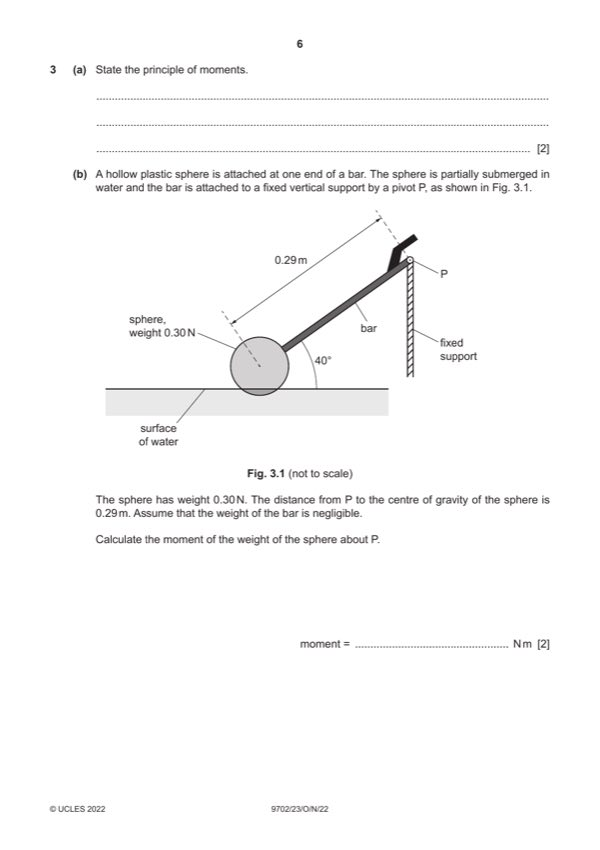
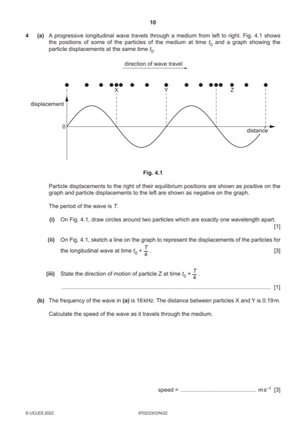
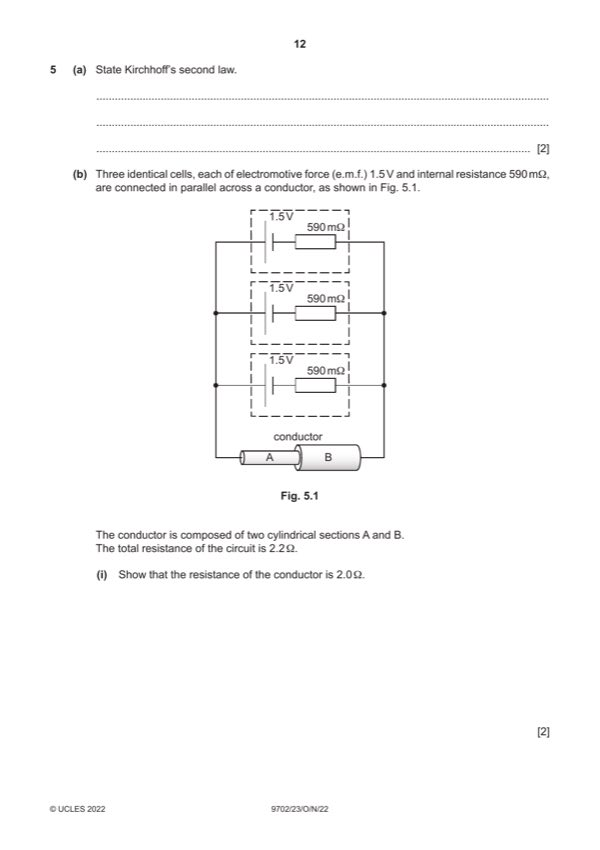
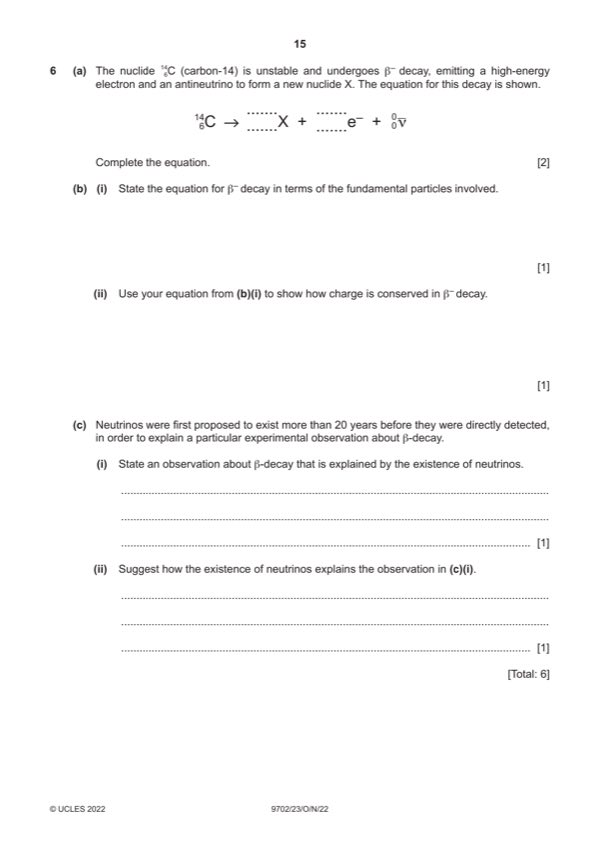

Question 0
Part 0 — solution
- B1
- 1 e
Mark points
- B1
- 1 e
Step-by-step solutions based on the mark scheme (not a mark-scheme dump).
Part 0 — solution

Part 1(a) — solution
Part 1(b) — solution
Part 1(c) — solution

Part 2(a)(i) — solution
Part 2(a)(ii) — solution
Part 2(a)(iii) — solution
Part 2(b)(i) — solution
Part 2(b)(ii) — solution
Part 2 — solution

Part 3(a) — solution
Part 3(b) — solution
Part 3(c)(i) — solution
Part 3(c)(ii) — solution
Part 3 — solution
Part 3 — solution
Part 3(c)(iv) — solution
Part 3(d) — solution

Part 4 — solution
Part 4(a)(i) — solution
Part 4(a)(ii) — solution
Part 4(a)(iii) — solution
Part 4(b) — solution
Part 4(c) — solution
Part 4(d)(i) — solution
Part 4(d)(ii) — solution

Part 5(a) — solution
Part 5(b)(i) — solution
Part 5(b)(ii) — solution
Part 5(c)(i) — solution
Part 5(c)(ii) — solution
Part 5(d) — solution

Part 6(a) — solution
Part 6(b)(i) — solution
Part 6(b)(ii) — solution
Part 6(c)(i) — solution
Part 6(c)(ii) — solution